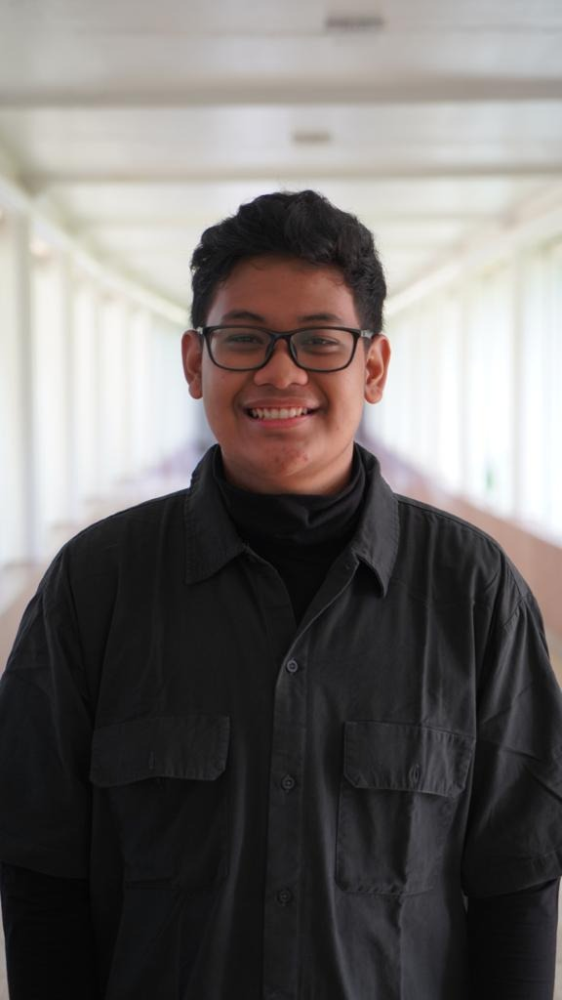

02 / Selected Work
Featured Projects
Applications engineered with modern full-stack architectures, mobile frameworks, and LLM integrations.

Software engineer and Informatics graduate from Telkom University (Cum Laude, GPA 3.66). I build production web applications, enterprise booking platforms, and high-reliability cashier POS systems deployed across Candi Prambanan & Ratu Boko under PT Taman Wisata Candi (InJourney).

I am a software engineer and Informatics graduate from Telkom University (Cum Laude, GPA 3.66/4.00), where my academic research culminated in an undergraduate defense paper on Computer Vision.
My core strength spans full-stack web development, enterprise systems, mobile applications, and system architecture. I build production software for heritage tourism operations under PT Taman Wisata Candi (TWC / InJourney), including the cashier POS system used across Candi Prambanan and Candi Ratu Boko, internal venue reservations, customer support AI knowledge bases for ticket.injourneydestination.id, and the official public web portal museumprambanan.twc.id.
Beyond coding, I have mentored future engineers as a Lecturer Assistant teaching data structures & algorithm design in C++, and hold an industry-recognized MTCNA (MikroTik Certified Network Associate) certification for network architecture.
Applications engineered with modern full-stack architectures, mobile frameworks, and LLM integrations.
Technologies and tools I utilize across full-stack development, mobile systems, and data pipelines.
• Revamped the UI of museumprambanan.twc.id, providing a cleaner catalog interface for Prambanan Temple's official museum website.
• Engineered the domain Knowledge Base and prompt guardrails for the customer service AI agent deployed live on ticket.injourneydestination.id, resolving visitor ticketing inquiries.
• Assisted in building a Point-of-Sale (POS) system for the Prambanan F&B and retail units, connecting transaction records with the company ERP for financial auditing.
• Worked directly with enterprise ERP workflows, vendor management, and cross-departmental operations.
• Assisted in teaching core data structure concepts to 30+ students using C++.
• Provided feedback on algorithm design and efficiency in assignments and projects.
• Supervised students during lab sessions and examinations.
• Designed and built a digital laundry logbook application to replace manual record-keeping.
• Developed a QR code-based inventory tracking system integrated with spreadsheets for real-time monitoring.
• Collaborated with 10+ hotel staff to ensure systems met functional requirements and provided training for end-users.
• Coordinated cross-division event planning for workshops, seminars, and community service projects, managing end-to-end resource allocation across venues, equipment, and transport.
• Led social media strategy and promotional campaigns for student volunteer events, driving visibility across platforms.
• Produced original content from concept to shoot and built partnerships with external organizations for collaborative campaigns.
Graduated with Latin honors (Cum Laude). Published an undergraduate defense paper at an academic conference, focusing on Computer Vision for International Conference on Information and Communication Technology (2026).
Relevant Coursework: Statistics, Calculus, Programming, Project Management, Big Data & AI, Data Visualization, Machine Learning.
• MikroTik Certified Network Associate (MTCNA): Networking & MikroTik RouterOS (2026)
• TOEFL Score: 610: Academic English reading, listening, writing, and comprehension (2026)
• Academic Research Publication: Undergraduate defense paper published in Computer Vision (2026)
I am currently open to full-time junior / entry-level software engineering roles, full-stack development, and technical collaborations.